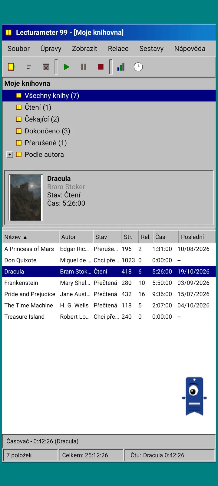
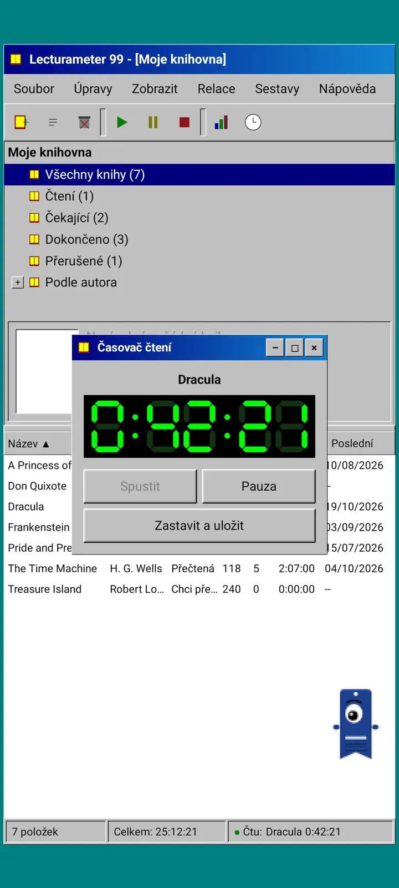
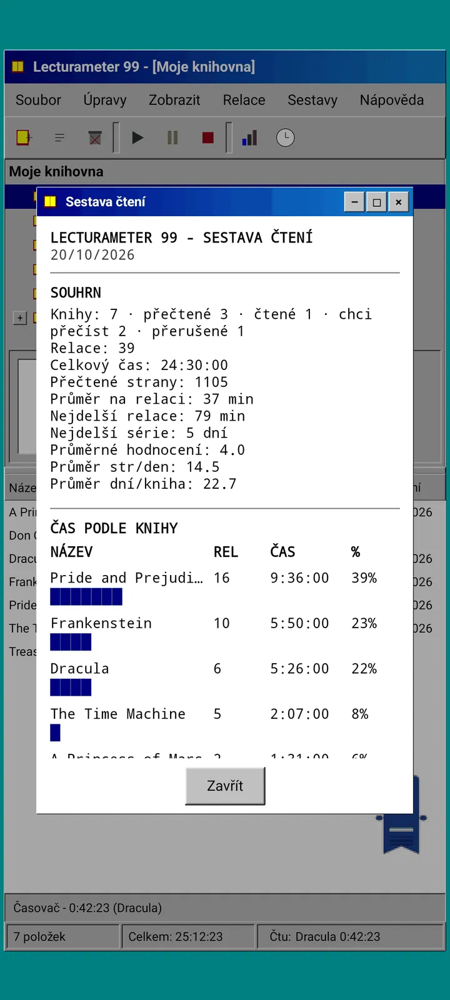
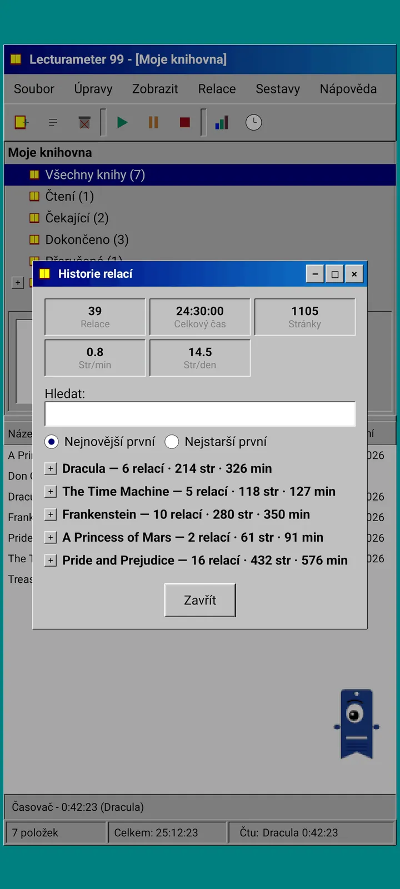
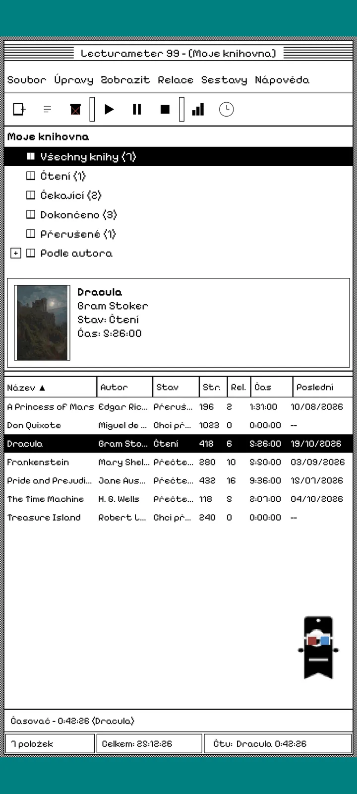
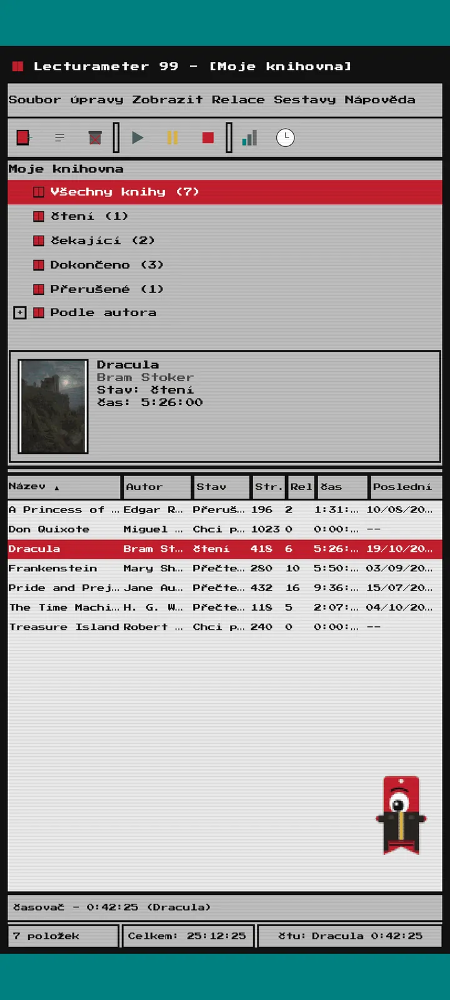
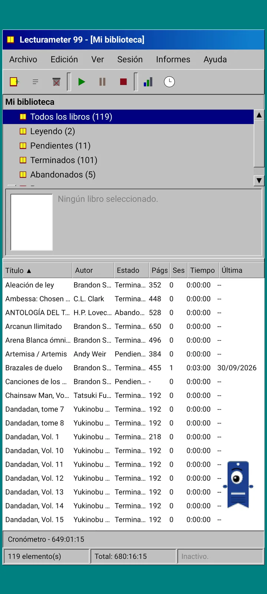

Lecturameter 1999
Lecturameter, jako bys ho v roce 1999 nainstaloval z CD-ROM. Alternativní klient aplikace s okny, nabídkami a tabulkami, který otevře tvoje skutečné zálohy.

Co to je
Desktopový program z konce devadesátých let ve tvém telefonu. Jedno okno nad modrozelenou plochou, panel nabídek, panel nástrojů, strom složek, hustá tabulka a stavový řádek.
- Strom knihovny: všechny knihy, čtené, čekající, dočtené, opuštěné a podle autora
- Tabulka s názvem, autorem, stavem, stránkami, relacemi, časem a posledním čtením. Klepnutím na záhlaví sloupce řadíš
- Skutečné hledání knih ve stejném katalogu, jaký používá Lecturameter
- Importuje a exportuje zálohu Lecturameter i CSV z Goodreads. Tvoje data jdou dovnitř i ven, aniž by se cokoli ztratilo

Proč existuje
Experiment: postavit myšlenku Lecturameter znovu od nuly na úplně jiných designových principech, bez zásahu do skutečné aplikace. Ze všech reinterpretací se mi nejvíc líbila ta z roku 1999, tak jsem ji dokončil jako zábavné cvičení a udělal z ní kompletního klienta. Je schválně jednodušší než Lecturameter: je to experiment a v zásadě se už dál vyvíjet nebude.
- Časovač v plovoucím okně se zeleným LCD displejem. Dá se přesouvat, minimalizuje se do hlavního panelu a dál počítá ve stavovém řádku
- Když zastavíš, dialog uložení relace se zeptá na stránky a spočítá tvoje tempo, stejně jako Lecturameter
- Uložené relace jsou relace Lecturameter: vrátí se do moderní aplikace, když vyexportuješ zálohu z Lecturameter 1999 a naimportuješ ji do Lecturameter.

Čtenářský report
Statistiky jsou tištěný report: souhrn, čas na knihu s blokovými sloupci, rychlost ve stránkách za den, kalendář roku nakreslený znaky a posledních sedm dní.

Historie relací
Relace seskupené podle knih ve stromu s plusem a minusem a s pěti čísly nahoře: relace, celkový čas, stránky, stránky za minutu a stránky za den.

Uložit relaci
Datum, minuty, první a poslední stránka, komentář. Souhrn počítá stránky a tempo, zatímco píšeš. Když dojdeš na poslední stránku, zeptá se, jestli jsi knihu dočetl.

Pagi 99
Pagi cestuje do roku 1999 taky: pixelový a volně po obrazovce jako kancelářští asistenti té doby. Můžeš ho přetáhnout, po klepnutí něco řekne a tipy ukazuje ve žlutých bublinách.
Motivy
Klasický 98 je zdarma a nastavený jako výchozí. Balíček přidává dalších šest, každý s vlastním pozadím a vlastními zvuky.

Vybereš ho v nabídce Zobrazit
Zobrazit, Motiv... otevře okno se sedmi motivy. Změna se hned projeví ve všech oknech, v časovači i u Pagi.
- Klasický 98, zdarma a výchozí: šedá okna, tmavomodré titulkové pruhy a modrozelená plocha
- Balíček motivů: 1984, Želé, Paměť, Věže, Jádro a 8 bitů
- Každý motiv má vlastní pozadí plochy a vlastní zvuky pro klepnutí, okna a časovač
- Zobrazit, Zvuky motivu je vypne, pokud čteš v tichu

Klasický 98
Šedá okna, tmavomodré titulkové pruhy a modrozelená plocha. Zdarma, s ním se aplikace otevře.

1984
Jednobitová černobílá plocha s tečkovanými vzory a hranatými okny.

Želé
Průsvitný barevný plast, zakulacená tlačítka a pruhy v pozadí.

Paměť
Nabídky diskové konzole z devadesátých let v tmavě modrých tónech.

Věže
Další disková konzole z devadesátých let, noční modrá se světle modrými linkami.

Jádro
Černozelená konzole, jako obrazovka, která se nikdy nevypíná.

8 bitů
Tlusté pixely, málo barev a kostrbatá písmena.

Vyzkoušej si to před zaplacením
Klepni na zamčený motiv a celá aplikace se do něj přepne. Když zavřeš bez koupě, vrátí se předchozí motiv.
Spořiče obrazovky
Objeví se jen při běžícím časovači, když telefon necháš být. Čekají 1, 3 nebo 5 minut, nebo nikdy. Jedno klepnutí tě vrátí zpátky a časovač počítá dál.

Létající knihy
Pixelové knihy mávající deskami přes černou obrazovku.

Pole písmen
Písmena z mnoha abeced, která proplouvají kolem jako hvězdné pole.

Trubky ze stránek
Trubky ze stránek, které se samy kreslí, dokud nezaplní obrazovku.

Skákající Pagi
Pagi odrážející se od okrajů obrazovky.

Čtenářské hodiny
Čas relace ve velkých LCD číslicích.

Kostýmy pro Pagi
Osm kostýmů pro Pagi 99. Vybereš je v Zobrazit, Kostým Pagi... a před zaplacením si je můžeš vyzkoušet.
- Kazeťák
- Kšiltovka naopak
- 3D brýle
- Neonové sluneční brýle
- Disketa v ruce
- Kožená bunda
- Kapesní mazlíček
- Papírová koruna
Obchod
Aplikace je zdarma a k zaznamenávání čtení kompletní. Co si můžeš koupit, mění jen její vzhled.
Celá aplikace bez časového omezení.
- Knihovna, hledání, časovač a relace
- Čtenářský report a historie relací
- Záloha Lecturameter a CSV z Goodreads, import i export
- Motiv Klasický 98 a Pagi 99
- Bez účtu a bez reklam
Jednorázové platby, žádné předplatné.
- Balíček motivů, 3,49 €: 6 motivů s pozadím a zvuky, k tomu spořiče obrazovky
- Spořiče obrazovky, 1,99 €: všech 5 spořičů
- Kostýmy pro Pagi, 1,99 €: všech 8 kostýmů
- Celý 1999, 4,49 €: motivy, spořiče a kostýmy
Volitelné spropitné v nabídce Nápověda, jestli mi chceš koupit kafe.
Motivy a kostýmy si můžeš před zaplacením vyzkoušet naživo. Když zavřeš bez koupě, vrátí se to, co jsi měl.
Co se liší oproti Lecturameter
Stejné jako v Lecturameter
- Stejná data: knihy, relace, stavy, hodnocení a poznámky. Soubor zálohy je v obou aplikacích stejný.
- Hledání knih podle názvu nebo autora.
- Skutečný časovač: počítá dál na pozadí, i když aplikaci zavřeš.
- Bez účtu, bez reklam, bez připojení kromě hledání knih.
- Stejné jazyky jako Lecturameter.
Jen v edici 1999
- Desktopové rozhraní z roku 1999. Žádný Material.
- Skutečná okna: přetahuješ je, minimalizuješ a zavíráš křížkem.
- Textový čtenářský report s kalendářem nakresleným znaky.
- Kontextová nabídka po dlouhém stisku a klávesové zkratky, když připojíš klávesnici.
- Pixelový Pagi 99 s bublinami s tipy.
- Volitelné motivy s vlastním pozadím a zvuky, spořiče obrazovky při běžícím časovači a kostýmy pro Pagi.
Co schválně vynechává
- Žádné Pro a žádné předplatné. Zaznamenávání čtení je celé zdarma, obchod prodává jen vzhled.
- Žádné výzvy, bingo, roční Wrapped ani widgety.
- Žádná imerzivní relace, zvuky prostředí ani záloha na Google Drive. Záloha se ukládá jako soubor.
Uzavřený test
Lecturameter 1999 je v uzavřeném testování na Google Play. iOS přijde později, zatím bez data.
- Přidej se do skupiny groups.google.com/g/lecturameter-1999
- Přihlas se jako tester na play.google.com/apps/testing/com.lecturameter.r1999
- Nainstaluj ho z Google Play
V uzavřeném testování na Google Play, iOS později. Přečti si článek na blogu a zjisti, odkud se vzal a co čekat.